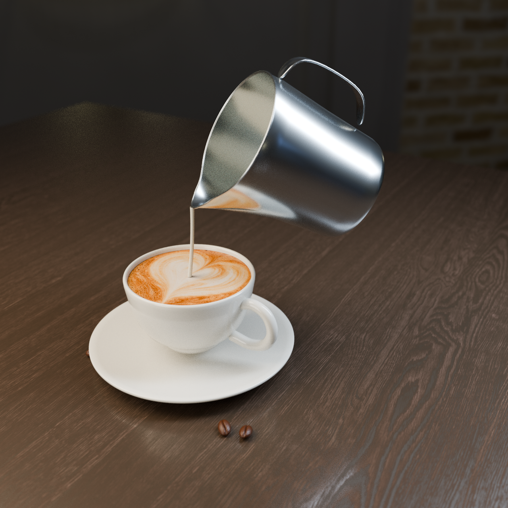

POUR STUDY / 01
从一帧，到一次倾倒。
先看动作，再转到另一面看看。
这页保留已经确认的核心倾倒场景；现在也可以探索完整九阶段旅程。
6 秒压缩演示固定视角 · 离线渲染
01
高位细流，让牛奶融入浓缩
杯内液面逐渐升高，此时先不画白色图案。
这是 16 帧/秒的动作与质感小样，顺滑度仍有提升空间。奶流使用三维几何、奶泡图案逐步显现，均为教学视觉近似；没有进行真实流体或风味预测。视频可暂停、拖动进度，但不能自由改变视角。
可自由旋转的真实三维模型静态姿态 · 实时渲染
加载三维模型…
拖动 / 方向键旋转 · 滚轮 / 双指缩放
这里可从任意角度检查杯壁、缸嘴、手柄与奶流连接。奶流是定格姿态；光照和材质经过实时化简，不代表离线短片可直接自由旋转，也不保证两种渲染完全一致。
已确认的视觉方向离线单帧 · 第三版

离线单帧视觉样板，非实时网页效果。点击图片可查看原图。
素材与边界
- 杯、奶缸和咖啡豆是按实物结构重新建模，不是实物扫描模型。奶缸参考 Fellow 官方产品资料，并非品牌产品的精确复刻。
- 环境与木材来自 Poly Haven 的 Comfy Café 和 Wood Table 001，均为 CC0 资产。
- 咖啡表面采用为本项目生成的奶泡纹理。拉花显现经过编排，并非真实物理过程的计算结果；短片时间被压缩。